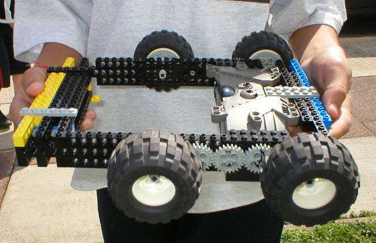

First |
Previous Picture |
Next Picture |
Last | Thumbnails
Dale & Janak Close up of the top of Dale & Janaks robot. Those chunky balloon tyres are some of the favourites - and for a size larger than a 40t, they have some of the best grip without going into complex compound tyres. Danny is in the background - trying to push some steering out of their robot - not a lot he can do though, build time is over.
